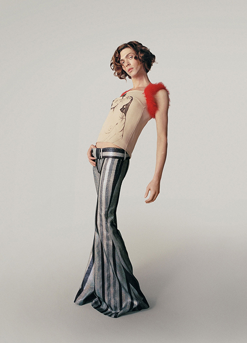
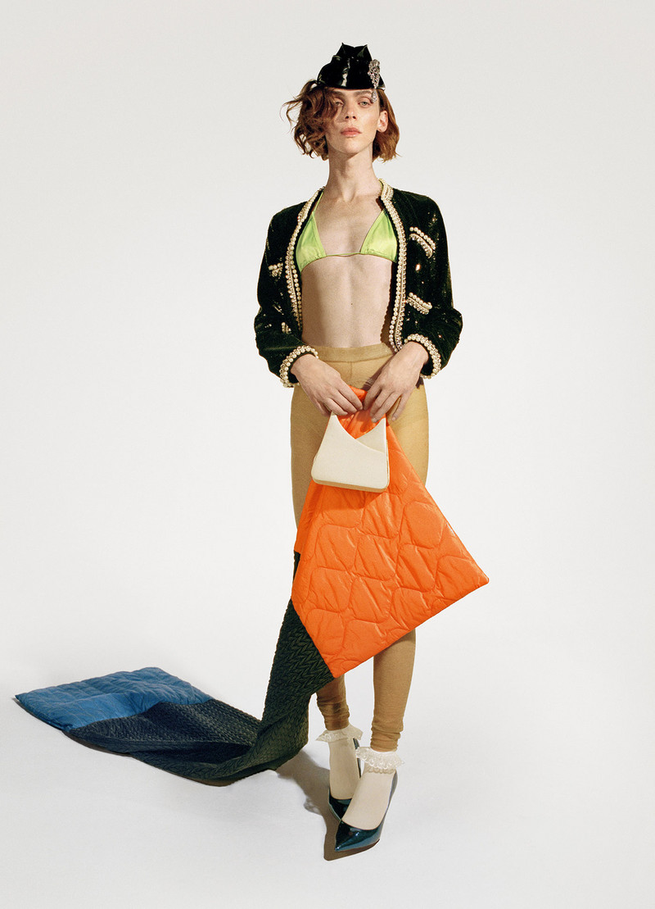
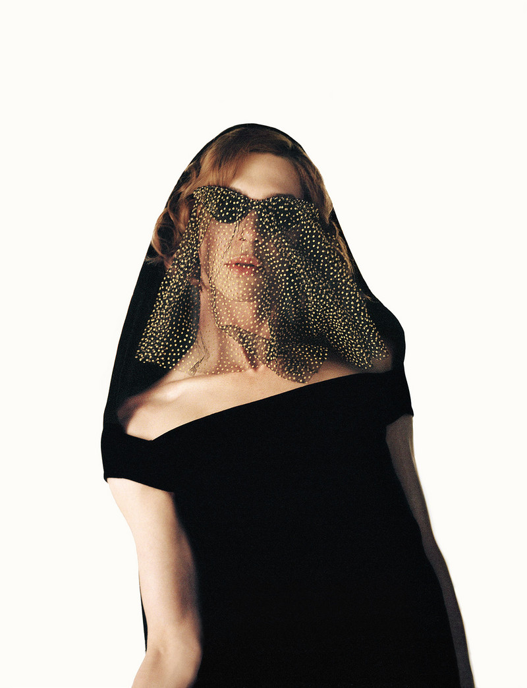
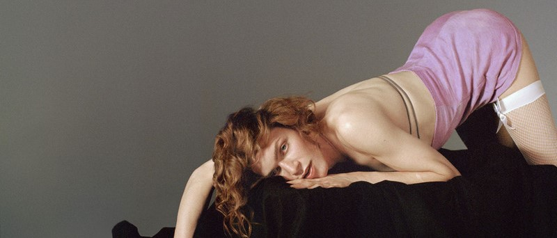

Sophie Xeon; 17 September 1986 – 30 January 2021), known mononymously as SOPHIE, was a Scottish music producer, songwriter, and DJ. Sophie's work is known for its brash take on pop music and is distinguished by experimental sound design, "sugary" synthesized textures, and incorporation of influences from underground dance styles. It would help pioneer the 2010s hyperpop microgenre.
Sophie, who initially remained anonymous and later came out as a transgender woman, came to prominence with the breakthrough singles "Bipp" (2013) and "Lemonade" (2014), which were compiled on the singles collection Product (2015). Sophie's only studio album Oil of Every Pearl's Un-Insides followed in 2018, earning a nomination for the Grammy Award for Best Dance/Electronic Album. Sophie worked closely with artists from the PC Music label, including A. G. Cook and GFOTY, and also produced for acts such as Charli XCX, Vince Staples, Kim Petras, Madonna, Let's Eat Grandma, and Namie Amuro.
Sophie died in January 2021 after an accidental fall in Athens. The Fader eulogized Sophie as a "pioneering Scottish artist whose vibrant electronic productions expanded modern pop music's scope," while Pitchfork credited Sophie's influential work with "mold[ing] electronic music into bracingly original avant-garde pop".
Career

Early Years
Sophie's music career began in a band named Motherland, formed with bandmates Sabine Gottfried, Matthew Lutz-Kinoy, and Marcella Dvsi. Sophie played live shows in Berlin and the UK during 2008–2009. Sophie later collaborated with bandmate Matthew Lutz-Kinoy on a series of performance works. In October 2010, Sophie remixed the Light Asylum single, "A Certain Person", creating the Motherland Radio version, uploaded to Light Asylum's SoundCloud page the following month. In 2011, this remix was included on Light Asylum's In Tension EP as a bonus track for the CD release. In 2012, this track was given a 300-copy release for club deejays on 12-inch, 45 rpm clear vinyl by independent label Mexican Summer. In 2011, Sophie scored the short film Dear Mr/Mrs by Dutch team Freudenthal/Verhagen. Detroit deejay Jeffrey Sfire met Sophie in Berlin in 2013; the two formed the duo Sfire, releasing a 12-inch vinyl disc Sfire on the CockTail D'Amore label. Sophie vocalized on one song "Sfire 3", which was later remixed by John Talabot in 2016. Sophie became involved with artists affiliated with the PC Music label after encountering Dux Kidz, a project between A. G. Cook and Danny L Harle.
2012-2015
Sophie's debut single "Nothing More to Say" was released in February 2013 via the London-based Glaswegian label Huntleys + Palmers.[18] The single, featuring vocals from UK singer Jaide Green, consisted of two mixes of the titular track (titled the "Dub" and "Vox"), as well as the B-side, "Eeehhh", which was initially posted on (and later deleted from) Sophie's SoundCloud in 2011. Its follow-up, "Bipp"/"Elle"—which had been released on SoundCloud as previews in the previous year along with a third track "OOH"—was released on Numbers later that year. "Bipp" in particular, featuring vocals from Sophie's former Motherland bandmate Marcella Dvsi, received considerable attention from music critics, topping XLR8R's year-end list and placing 17 on Pitchfork's. Pitchfork later ranked "Bipp" 56 on its list of the best tracks from 2010 to 2014. In mid-2014, Sophie collaborated with Japanese pop singer Kyary Pamyu Pamyu. Also in 2014, Sophie collaborated with A. G. Cook and the US-based artist Hayden Dunham for the project QT, co-producing her debut single "Hey QT" with Cook. The project included a fictional energy drink called the QT Energy Elixir. At Sophie's request, "Hey QT" repeats the drink's name for product placement.
Sophie's next single, "Lemonade"/"Hard", was released in August 2014, with vocal contributions on the former from fellow musician Nabihah Iqbal and model Tess Yopp and vocal contributions on the latter from PC Music artist GFOTY. Numbers released "Lemonade"/"Hard" as a 12" single.Both tracks appeared on the Billboard Twitter Real-Time charts.[32] "Lemonade" and "Hard" placed 68th and 91st respectively on the 2014 Pazz and Jop critics poll, and the single was included in the top ten of year-end singles lists by The Washington Post, Resident Advisor, Complex, and Pitchfork; "Hard" was included in the top ten on lists by Dazed and Dummy "Lemonade" appeared in a 2015 commercial for McDonald's.

2015-2017
In March 2015, Charli XCX announced a collaboration with Sophie. It was later revealed that the pair had worked on multiple songs for XCX's upcoming studio album. In September 2015, Sophie's debut album Product was made available for preorder. The eight tracks listed were the four Numbers singles from 2013 and 2014, as well as four new tracks: "MSMSMSM", "Vyzee", "L.O.V.E.", and "Just Like We Never Said Goodbye". "MSMSMSM" was released on 29 September, and "Just Like We Never Said Goodbye" followed on 15 October.
n February 2016, Charli XCX released her Vroom Vroom EP, produced primarily by Sophie. It was later revealed that the extended play would act as a teaser for XCX's upcoming album, which would be produced by Sophie. After the extended play's release, Sophie embarked on tour with Charli XCX in promotion of new music. Sophie, along with A. G. Cook and Hannah Diamond also involved with the EP, received cameos in the official video for the lead single, "Vroom Vroom". The video was premiered on Apple Music and other platforms soon after. In late 2016, Sophie acted as an additional producer on Charli XCX's song "After the Afterparty", which features vocals from Lil Yachty. Sophie cameos in the single's official music video. Sophie also received production credits for two songs on XCX's 2017 mixtape Number 1 Angel, and another for one song on XCX's second mixtape of 2017, Pop 2, which was released later that year. Sophie collaborated with producer Cashmere Cat on several tracks from his album 9, including "Love Incredible" alongside Camila Cabello and "9 (After Coachella)" with MØ.
2017-2021
In October 2017, Sophie released "It's Okay to Cry", the first new material from the artist in almost two years. The music video for the song was the first time Sophie's voice and image were used in a release. Sophie subsequently opened up to the press about being a trans woman. Later in the month, Sophie also debuted in live performance, premiering newly recorded songs from Sophie's second album with vocal performances by Cecile Believe. The single "Ponyboy" was released with a self-directed music video on 7 December 2017. The third single from the album, "Faceshopping", was released on 16 February 2018 with a music video on 4 April 2018.

On 3 April 2018, Sophie announced via Instagram that the album was complete and that it would not be titled Whole New World as previously thought. On 1 May 2018, an interview with Crack Magazine revealed that the official album title is Oil of Every Pearl's Un-Insides. It was released on 15 June 2018 by Sophie's own label, MSMSMSM, along with Future Classic and Transgressive. In early 2018, it was revealed in one of Sophie's tweets that the artist had contributed to and produced Lady Gaga's latest album. In a video posted on social media, when asked, Sophie said: "Yes. I mean whatever, you know. I work on a lot of different things. If it comes out, then it's cool. You can never tell. But she's a really cool person."
In July 2018, Sophie revealed work on four new projects, including a newly released debut album, which were all going to be released that year. Sophie said, "I have the next one finished... I'm going to release four albums this year". In an interview with Lenny Letter, Sophie said that Sophie had done so much collaborating with other people that, "Basically, I've done a whole new album in the last two weeks." When asked to clarify whether this was a comment on EPs or albums, Sophie stated that it would be "a mix". Sophie had also been working with Kim Petras, Charli XCX, and Bibi Bourelly on new material within the year, as well as some rap collaborations in addition to the confirmed Lady Gaga collaboration.
At the 61st Annual Grammy Awards, Oil of Every Pearl's Un-Insides was nominated for Best Dance/Electronic Album, and Sophie made history as both one of the first openly transgender artists to be nominated in this category and one of the three first openly transgender women to be nominated for a Grammy. During a red carpet interview at the ceremony, Sophie confirmed work on a remix album of Oil of Every Pearl's Un-Insides. In July 2019, Oil of Every Pearl's Un-Insides Non-Stop Remix Album was announced as part of an exclusive 3-CD set that included the original Oil of Every Pearl's Un-Insides album as well as a clutch bag featuring its artwork. The remix album was later released as two videos on YouTube on 29 July. Sophie's September 2020 single "Metal" was a collaboration with Jimmy Edgar. In January 2021, the single "Unisil" was released two days before Sophie's death. Sophie had made the song alongside Product and initially released it as a digital bonus track.
At around 4 a.m. on 30 January 2021, at the age of 34, Sophie died at Attikon University Hospital in Athens. Sophie had been taken to the hospital after accidentally falling three storeys (approximately 42 feet or 13 metres) from the rooftop of a building while attempting to take a picture of the full moon. Sophie's partner, Evita Manji, said that "it took the police and fire brigade around 90 minutes to get her out" before their arrival to the hospital.
